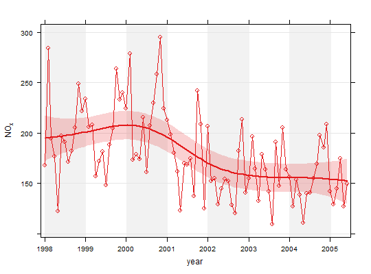

Use non-parametric methods to calculate time series trends
smoothTrend(mydata, pollutant = "nox", deseason = FALSE, type = "default", statistic = "mean", avg.time = "month", percentile = NA, data.thresh = 0, simulate = FALSE, n = 200, autocor = FALSE, cols = "brewer1", shade = "grey95", xlab = "year", y.relation = "same", ref.x = NULL, ref.y = NULL, key.columns = length(percentile), name.pol = pollutant, ci = TRUE, alpha = 0.2, date.breaks = 7, auto.text = TRUE, k = NULL, ...)
date and at
least one other parameter for which a trend test is required;
typically (but not necessarily) a pollutant.TRUE the function stl is used (seasonal trend
decomposition using loess). Note that if TRUE missing
data are first linearly interpolated because stl cannot
handle missing data.type determines how the data are split i.e.
conditioned, and then plotted. The default is will produce a
single plot using the entire data. Type can be one of the
built-in types as detailed in cutData e.g.
“season”, “year”, “weekday” and so on. For
example, type = "season" will produce four plots --- one
for each season.
It is also possible to choose type as another variable in
the data frame. If that variable is numeric, then the data will
be split into four quantiles (if possible) and labelled
accordingly. If type is an existing character or factor
variable, then those categories/levels will be used directly.
This offers great flexibility for understanding the variation of
different variables and how they depend on one another.
Type can be up length two e.g. type = c("season",
"weekday") will produce a 2x2 plot split by season and day of
the week. Note, when two types are provided the first forms the
columns and the second the rows.timeAverage for more details.statistic =
"percentile" is chosen. Can be a vector of numbers e.g.
percentile = c(5, 50, 95) will plot the 5th, 50th and
95th percentile values together on the same plot.avg.time. A value of zero
means that all available data will be used in a particular
period regardless if of the number of values available.
Conversely, a value of 100 will mean that all data will need to
be present for the average to be calculated, else it is recorded
as NA. Not used if avg.time = "default".FALSE. If
TRUE, bootstrap simulations are undertaken, which also
account for autocorrelation.simulate =
TRUE.FALSE. Generally,
accounting for autocorrelation increases the uncertainty of the
trend estimate sometimes by a large amount.cols = c("black", "green") or pre-defined openair colours
--- see openColours for more details.ref.y for details. In this case the correct date format
should be used for a vertical line e.g. ref.x = list(v =
as.POSIXct("2000-06-15"), lty = 5).ref.y.ref.y =
list(h = 50, lty = 5) will add a dashed horizontal line at 50.
Several lines can be plotted e.g. ref.y = list(h = c(50,
100), lty = c(1, 5), col = c("green", "blue")). See
panel.abline in the lattice package for more
details on adding/controlling lines.statistic = "percentile".FALSE.date.breaks
up or down.TRUE (default) or FALSE. If
TRUE titles and axis labels will automatically try and
format pollutant names and units properly e.g. by subscripting
the ‘2’ in NO2.gam
function in package mgcv. By default it is not used and
the amount of smoothing is optimised automatically. However,
sometimes it is useful to set the smoothing amount manually
using k.cutData and lattice:xyplot. For example,
smoothTrend passes the option hemisphere =
"southern" on to cutData to provide southern (rather
than default northern) hemisphere handling of type =
"season". Similarly, common graphical arguments, such as
xlim and ylim for plotting ranges and pch
and cex for plot symbol type and size, are passed on
xyplot, although some local modifications may be applied
by openair. For example, axis and title labelling options (such
as xlab, ylab and main) are passed to
xyplot via quickText to handle routine formatting.
One special case here is that many graphical parameters can be
vectors when used with statistic = "percentile" and a
vector of percentile values, see examples below.As well as generating the plot itself, smoothTrend
also returns an object of class ``openair''. The object includes
three main components: call, the command used to generate
the plot; data, the data frame of summarised information
used to make the plot; and plot, the plot itself. Note
that data is a list of two data frames: data (the
original data) and fit (the smooth fit that has details
of the fit and teh uncertainties). If retained, e.g. using
output <- smoothTrend(mydata, "nox"), this output can be
used to recover the data, reproduce or rework the original plot
or undertake further analysis.
An openair output can be manipulated using a number of generic
operations, including print, plot and
summarise.
The smoothTrend function provides a flexible way of
estimating the trend in the concentration of a pollutant or other
variable. Monthly mean values are calculated from an hourly (or
higher resolution) or daily time series. There is the option to
deseasonalise the data if there is evidence of a seasonal cycle.
smoothTrend uses a Generalized Additive Model (GAM) from
the gam package to find the most appropriate level
of smoothing. The function is particularly suited to situations
where trends are not monotonic (see discussion with
TheilSen for more details on this). The
smoothTrend function is particularly useful as an
exploratory technique e.g. to check how linear or non-linear
trends are.
95
of the confidence intervals are also available through the
simulate option. Residual resampling is used.
Trends can be considered in a very wide range of ways, controlled by
setting type - see examples below.
TheilSen for an alternative method of
calculating trends.
# load example data from package data(mydata) # trend plot for nox smoothTrend(mydata, pollutant = "nox")# trend plot by each of 8 wind sectors ## Not run: smoothTrend(mydata, pollutant = "o3", type = "wd", ylab = "o3 (ppb)") # several pollutants, no plotting symbol ## Not run: smoothTrend(mydata, pollutant = c("no2", "o3", "pm10", "pm25"), pch = NA) # percentiles ## Not run: ------------------------------------ # smoothTrend(mydata, pollutant = "o3", statistic = "percentile", # percentile = 95) ## --------------------------------------------- # several percentiles with control over lines used ## Not run: ------------------------------------ # smoothTrend(mydata, pollutant = "o3", statistic = "percentile", # percentile = c(5, 50, 95), lwd = c(1, 2, 1), lty = c(5, 1, 5)) ## ---------------------------------------------